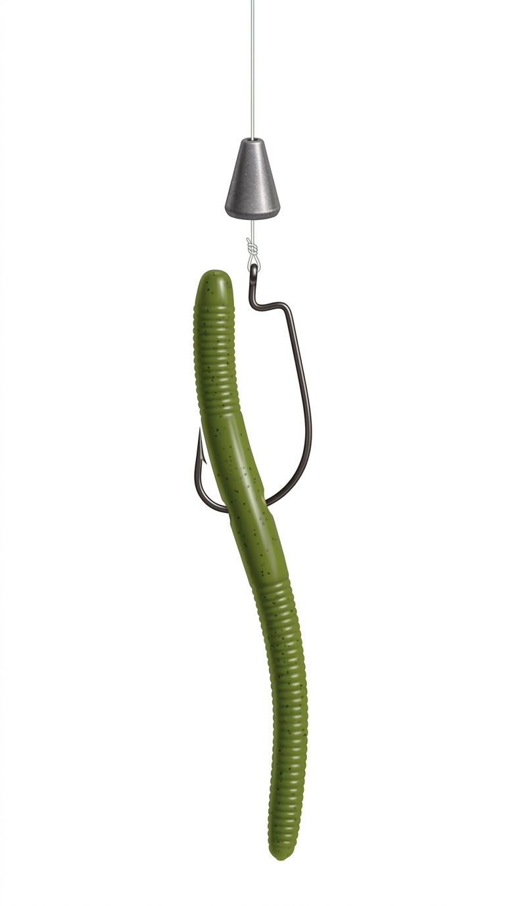
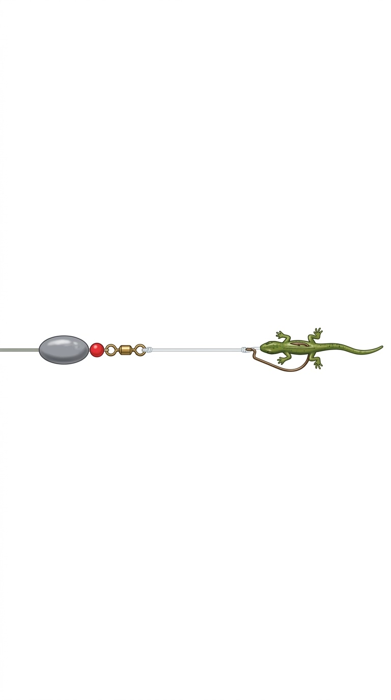
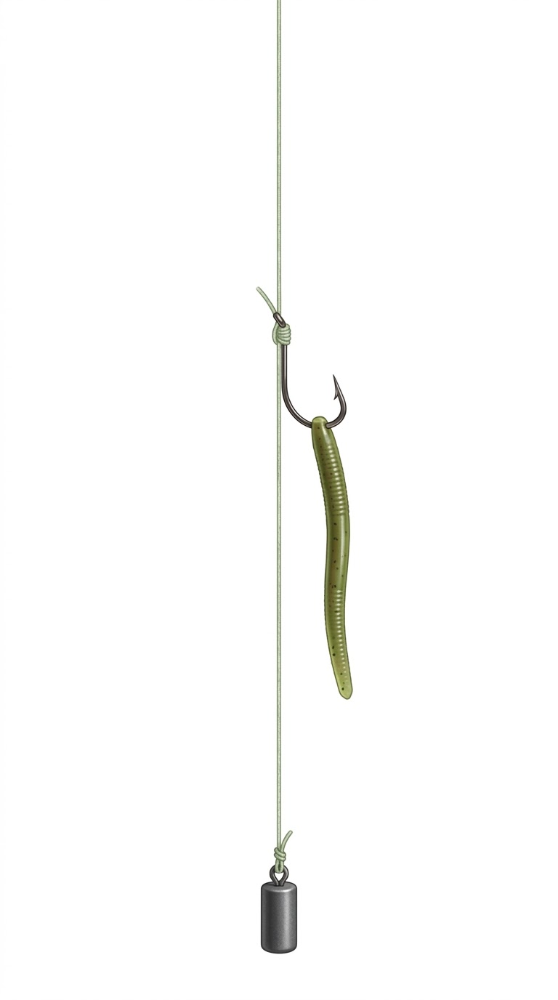
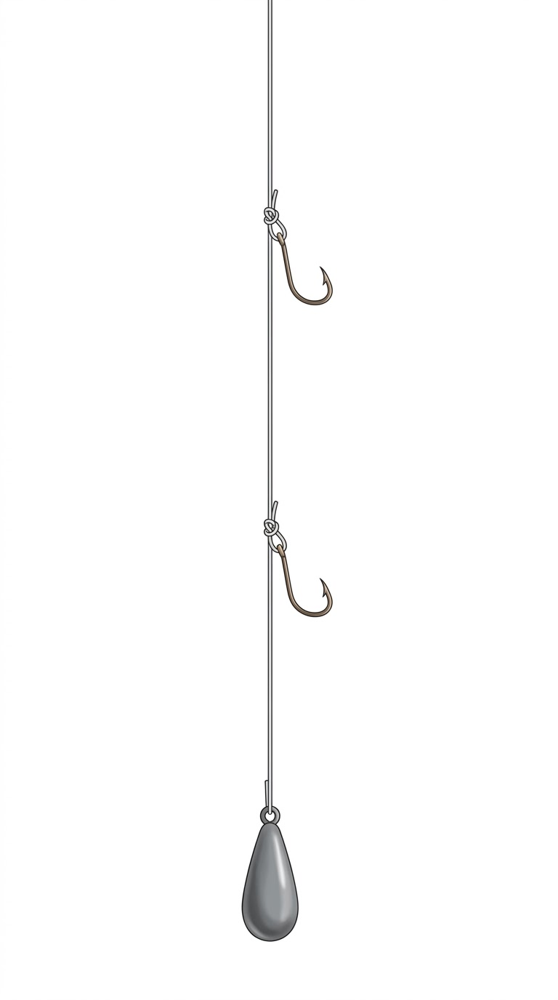
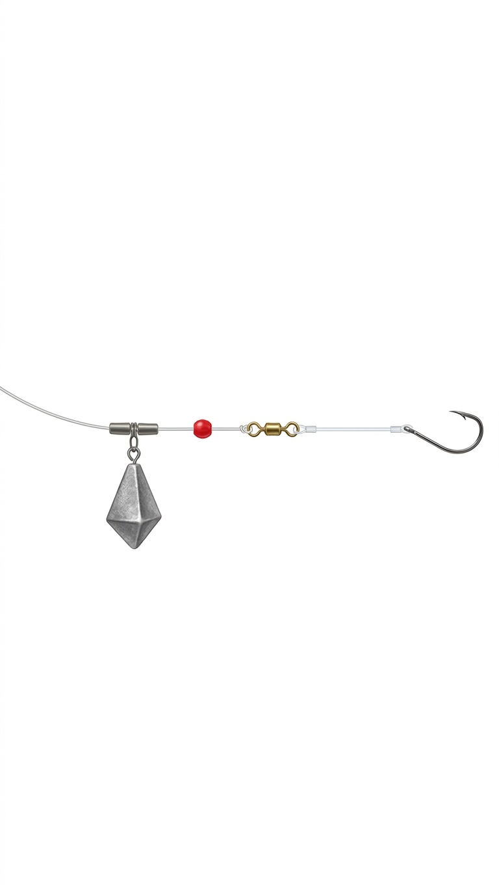
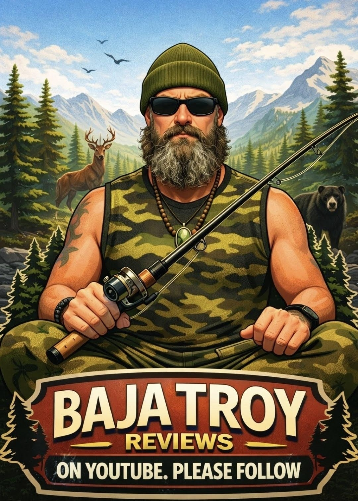

5 FISHING RIGS
YOU SHOULD KNOW
SECTION: FRESHWATER · PIERS · SURF
The 5 Rigs At A Glance
TEXAS RIG
Best For: Largemouth bass, spotted bass, smallmouth bass, calico bass, sand bass, rockfish, and halibut.
Where To Use It: Use a Texas Rig around weeds, grass, brush, docks, rocks, fallen trees, tule lines, kelp, eelgrass, jetties, and rocky structure.
Why Use It: The Texas Rig is weedless, making it one of the best rigs for fishing heavy cover without constantly getting snagged.
CAROLINA RIG
Best For: Largemouth bass, smallmouth bass, spotted bass, surfperch, corbina, croaker, and halibut.
Where To Use It: Use a Carolina Rig on open flats, points, gravel, ledges, offshore humps, channels, sandy beaches, and surf troughs.
Why Use It: The Carolina Rig lets your bait move naturally behind the weight. It is great for covering water and finding fish that are feeding along the bottom.
DROP SHOT RIG
Best For: Largemouth bass, smallmouth bass, spotted bass, trout, crappie, panfish, halibut, calico bass, sand bass, rockfish, and surfperch.
Where To Use It: Use a Drop Shot around docks, deep rocky banks, ledges, boat structure, kelp, reefs, jetties, and deeper water.
Why Use It: The Drop Shot holds your bait just above the bottom, making it a strong choice when fish are feeding low but do not want a bait dragging directly on the bottom.
HIGH-LOW RIG
Best For: Surfperch, corbina, croaker, whiting, spot, bluefish, fluke, rockfish, black sea bass, and other small-to-medium bait fish.
Where To Use It: Use a High-Low Rig from sandy beaches, piers, jetties, rock walls, and open-bottom surf areas.
Why Use It: The High-Low Rig uses two hooks, allowing you to fish two baits at once or present bait at two different heights above the sinker.
SURF / FISH-FINDER RIG
Best For: Barred surfperch, corbina, croaker, halibut, striped bass, bat rays, guitarfish, sharks, drum, bluefish, and pompano.
Where To Use It: Use a Surf or Fish-Finder Rig on sandy beaches, in surf troughs, near cuts in the beach, along open shoreline, and from piers.
Why Use It: The sliding weight allows a fish to pick up the bait with less resistance. It is one of the most versatile rigs for fishing natural bait in the surf.
“It doesn’t always count where you lay it down; sometimes it’s what you’re laying down.”
— Baja Troy, Est. 1972
Texas Rig — The Basics
Best For
Where To Use It
- Weeds, grass, brush
- Docks & fallen trees
- Rocky structure
- Tule lines
- Kelp & eelgrass
- Jetties
Why Use It
The Texas Rig is weedless — one of the best rigs for fishing heavy cover without constantly getting snagged.
The Texas Rig: The Weedless Workhorse
The rig you tie on when bass hide where decent folks don’t stick a hook: weeds, brush, flooded timber, dock posts, and laydowns. The hook point tucks into the soft plastic, so it comes through cover that would salad-bar a normal jighead.
Gear links support Baja Troy Reviews — I earn a small commission at no extra cost to you.
Texas Rig

THE TEXAS RIG — bullet weight, offset hook, soft plastic
Build It
- Slide the bullet weight on point-first toward the rod tip
- Add a bead for sound and knot protection
- Add a bobber stop above the weight if you want it pegged
- Tie the hook with a Palomar or uni knot
- Push the hook point into the nose of the bait about 1/4 inch, out, slide the bait up the shank
- Rotate and reinsert so the bait hangs straight; skin-hook the point to go weedless
- Test it — if it twists or spins, redo it
Fish It
Cast or pitch beyond the target. Let it fall on a semi-slack line — many bites happen on the fall. Hop it once or twice, pause, drag it slow through the cover. When the line ticks, goes heavy, or moves sideways, reel down and set the hook firm.
When the lake looks like a floating salad bar, don’t complain about the weeds. That is the bass house. Knock on the front door with a Texas-rigged craw.
Common mistake: skin-hooking the point too deep. If a normal hookset can’t expose it, you’re just feeding the fish plastic.
Carolina Rig — The Basics
Best For
Where To Use It
- Open flats & points
- Gravel & ledges
- Offshore humps & channels
- Sandy beaches
- Surf troughs
Why Use It
The Carolina Rig lets your bait move naturally behind the weight — great for covering water and finding fish feeding along the bottom.
The Carolina Rig: Drag the Bottom
Your cover-water, drag-the-bottom setup. The weight is separated from the bait so the soft plastic trails naturally behind the sinker. Built for long points, flats, gravel, and broad areas where you’re finding fish, not fishing one bush.
Build: egg or bullet sinker → bead → barrel swivel → 18–36″ fluorocarbon leader → offset hook → lizard, worm, or floating plastic rigged weedless.
Gear links support Baja Troy Reviews — I earn a small commission at no extra cost to you.
Carolina Rig

THE CAROLINA RIG — egg sinker, bead, swivel, leader
Carolina: Field Notes
The Carolina rig is a search tool. Drag 100 yards of flat and only one 10-foot stretch produces bites? Congratulations — you found the fish. Now slow down and work that stretch.
Common mistake: fishing it like a Texas rig. The Carolina wants a slow drag and long pauses, not constant hopping.
Strength: covers water and finds fish. Weakness: not for thick cover — that’s Texas rig country.
Drop Shot Rig — The Basics
Best For
Where To Use It
- Docks
- Deep rocky banks & ledges
- Boat structure
- Kelp & reefs
- Jetties
- Deeper water
Why Use It
The Drop Shot holds your bait just above the bottom — for fish feeding low that don’t want a bait dragging on the bottom.
The Drop Shot: The Finesse Answer
For picky, pressured, suspended, or deep fish. The weight sits below the hook, holding the bait up off the bottom where fish can see it without eating rocks.
Build: tie a Palomar to the drop-shot hook leaving a long tag → run the tag back through the hook eye so the hook stands out horizontal → clip the weight 10–36″ below (18–20″ is the baseline) → nose-hook a small finesse worm or minnow.
Gear links support Baja Troy Reviews — I earn a small commission at no extra cost to you.
Drop Shot

THE DROP SHOT — hook above, weight below
Drop Shot: How to Fish It
Cast or drop straight down. Let the weight touch bottom, reel to a slight bow, then shake the bait gently without dragging the weight. Pause. Move a foot or two. Pause again. Dead-stick, shake, drag a little, pause.
When the bite is tough, the drop shot is how you ask the fish a polite question instead of kicking their door in. Polite catches fish on hard days.
Common mistake: moving the weight instead of the bait. The weight anchors; the bait dances. Drag the weight around and you just spooked the neighborhood.
High-Low Rig — The Basics
Best For
Where To Use It
- Sandy beaches
- Piers
- Jetties
- Rock walls
- Open-bottom surf areas
Why Use It
The High-Low Rig fishes two hooks — two baits at once, or bait presented at two different heights above the sinker.
The High-Low Rig: Pier & Bottom-Catcher
Two baited hooks fish above a bottom sinker, putting bait at two heights while the setup stays anchored. A Southern California pier classic.
Build: 20–40 lb leader → dropper loop 12–18″ above the end → second dropper loop above that → hooks on the loops → sinker clip at the bottom.
Gear links support Baja Troy Reviews — I earn a small commission at no extra cost to you.
High-Low Rig

THE HIGH-LOW RIG — two hooks above the sinker
High-Low: Field Notes
On a busy pier, keep casts short, straight, and under control. The high-low rig catches fish — and it will absolutely catch a stranger’s rod tip, a stroller, or somebody’s nachos if you fish it sloppy.
Bait it: squid strips, shrimp, mussel, sand crabs, or legal local bait. Match hook to bait, bait to fish.
Common mistake: hooks too big for the bait. Big hooks feed the bait-stealers; right-sized hooks catch the fish.
Surf / Fish-Finder Rig — The Basics
Best For
Where To Use It
- Sandy beaches
- Surf troughs
- Cuts in the beach
- Open shoreline
- Piers
Why Use It
The sliding weight lets a fish pick up the bait with less resistance — one of the most versatile natural-bait surf rigs.
The Surf / Fish-Finder Rig: Let ’Em Run
The sinker slides free on the main line so a fish picks up the bait with less resistance — it doesn’t feel the weight until it’s already hooked. Also called the surf rig or fish-finder rig — same rig, two names.
Build: sinker slide → pyramid or sputnik sinker → bead → barrel swivel → 18–36″ fluorocarbon leader → hook matched to bait. That’s the whole rig.
Gear links support Baja Troy Reviews — I earn a small commission at no extra cost to you.
Surf / Fish-Finder

THE SURF / FISH-FINDER RIG — sliding sinker, free-running bait
Surf: Read the Water
Cast into the trough between sandbars or the edge of a bar — that’s the grocery lane. Use just enough sinker to hold; if the current can’t move the bait, it looks dead.
In the surf, the fish are often cruising the trough between the sandbars — not the dry beach and not the horizon. Learn to read the water, then put the bait in the grocery lane.
Common mistake: too much weight. A bait pinned to the sand like a paperweight catches nothing but sunburn.
“Don’t give up — rig up.”
— Baja Troy, Est. 1972
Tie One On
Five rigs, tied right, will cover more water than a tackle box full of hopes. Pick the rig that matches the cover, fish it slow, and let the rig do its job.

►WATCH THE FULL VIDEO ON YOUTUBE